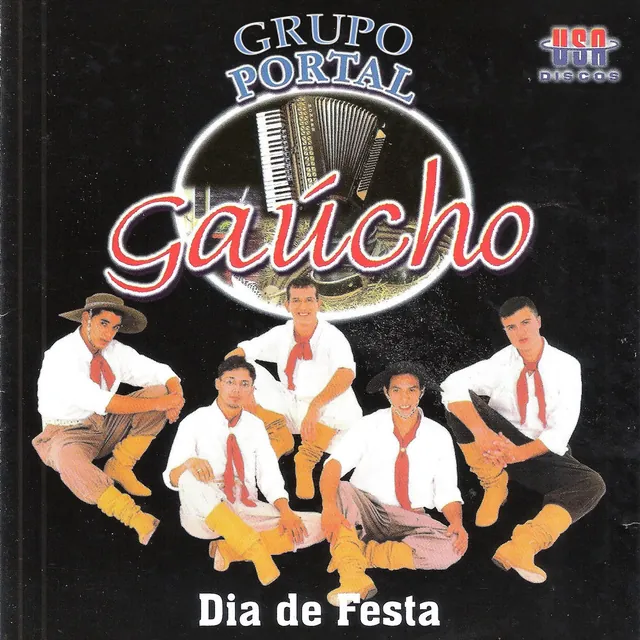
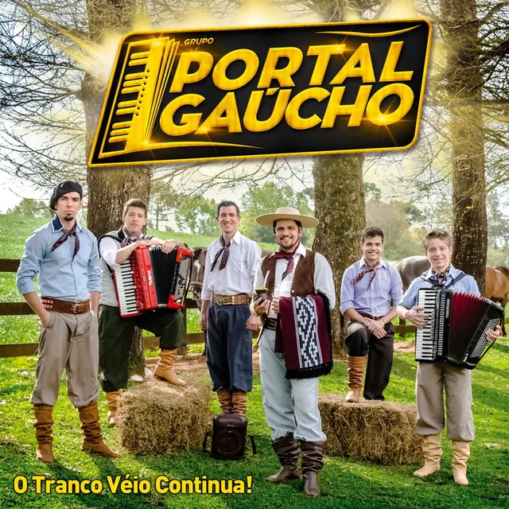
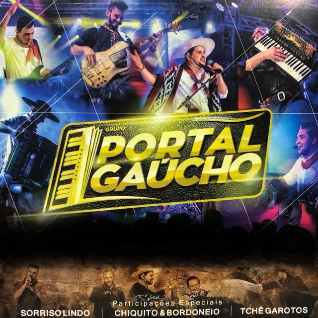
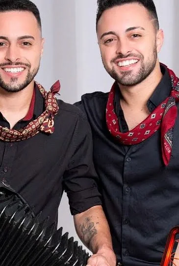
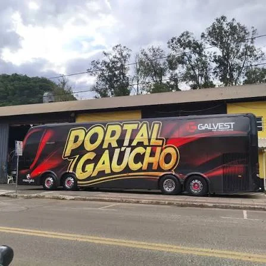
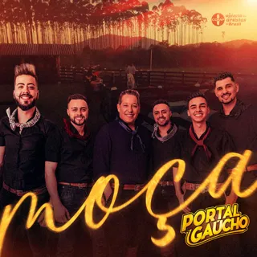
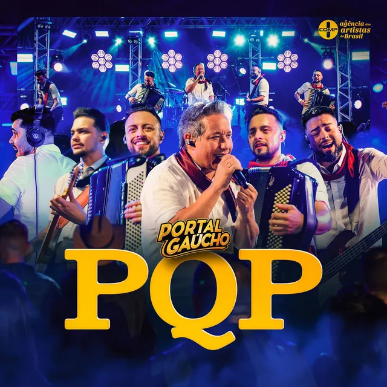

Voz
Victor Pedroso
Intérprete, compositor e dono do grupo.
Desde 1999 · Vaneira de baile
O Tranco Véio mais famoso do Brasil.
Lançamento · 15 de outubro de 2026
Tem história que começa na mesa do bar e termina dentro de casa, com uma surpresa na sala. Em menos de uma semana, mais de 440 mil pessoas já deram o play.
A história do grupo
Em 12 de junho de 1999, o Portal Gaúcho subiu ao palco pela primeira vez. A ideia era do empresário Sérgio Deretti: um grupo feito para o baile, com a gaita na frente e a vaneira sem freio.
Vieram os discos, a estrada e um refrão que o Sul inteiro canta de cor. Gravado ao vivo com o Tchê Garotos, Tranco Véio Fandangueiro passou dos 75 milhões de visualizações e virou hino de fandango. Hoje, com Victor Pedroso na voz e no comando, o Portal segue lotando salão do Sul ao Sudeste.
12 de junho. Nasce o Portal Gaúcho, pela ideia do empresário Sérgio Deretti.
O disco mais antigo do grupo disponível nas plataformas.

O Portal está no CD e DVD do festival que reuniu a música de baile do Sul.
Sai junto com Campo Afora. O nome já dizia: o tranco não ia parar.

Tranco Véio Fandangueiro com o Tchê Garotos. Hoje são mais de 75 milhões de views.
O baile completo, gravado ao vivo em Joinville.

Paredes Pintadas passa de 4,8 milhões e Implorando pra Trair, com Sorriso Lindo, de 3,4 milhões.
Eu e o Pingo com Chê Lokedo e a coletânea Coleção de Ouro.
Tranco Véio com Antony & Gabriel, A Nega Véia Embrabô e PQP. Tudo isso rodando de ônibus novo.
A história · A voz e o dono
Intérprete, compositor e mais de 30 anos de música. Antes de assumir o Portal Gaúcho como voz e sócio, Victor foi a voz principal de alguns dos maiores nomes da música do Sul.
Na voz dele, o povo dançou Vuco Vuco, Filho do Papai e Clarão da Luz. Hoje é ele quem comanda o palco e o rumo do grupo, levando a herança do baile gaúcho pelo Sul e pelo Sudeste.
Ele mesmo conta
A história · Quem faz o tranco
Intérprete, compositor e dono do grupo.

As cordeonas do Portal. A gaita que puxa o baile.
Baterista e intérprete. O motor do tranco.
Contrabaixista. Segura o chão do salão.
Guitarrista. O brilho em cima da vaneira.
A história · Na estrada
Preto, vermelho em labareda e o amarelo do letreiro. Quando o ônibus do Portal encosta, a cidade já sabe que vai ter baile.

Música · Clipes oficiais
Os clipes oficiais, do mais novo ao mais antigo. Escolha um e assista aqui mesmo.
Música · As faixas que lotam o salão

Moça0 mi views
PQP novo0 mil viewsVisualizações dos clipes oficiais no YouTube, consultadas em outubro de 2026. Também na voz do Portal: Trancão de Baile, Na Moda Loca, Ioiô, No Copo ou na Latinha, Mulherada de Bombacha.
Música · Discografia
Arraste, use as setas ou clique numa capa. Cada disco abre nas plataformas.
Na roda de conversa
Horas de história contadas pelos próprios músicos. O YouTchê PodCast recebeu o Victor, o Fogaça, os Canani e o Iago, um por vez.
Outras rodas
Arte & fotos
Ouça e siga
Escolha onde ouvir e siga o grupo nas redes. Agenda, bastidores e lançamentos saem primeiro por lá.
Plataformas digitais
Redes sociais
Shows & contratações
Fala com a produção sobre a cidade, a data e o evento. O Portal leva o baile inteiro.